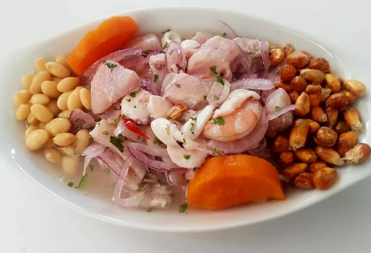

Piura
Ceviche Piurano
Pescado fresco marinado en limón con cebolla roja y ají limo, representando los sabores intensos del norte peruano.
Leer reseñaSu origen se relaciona con la tradición andina de la papa y evolucionó en Lima hasta convertirse en uno de los platos más reconocidos.
Maridaje: Chicha de jora